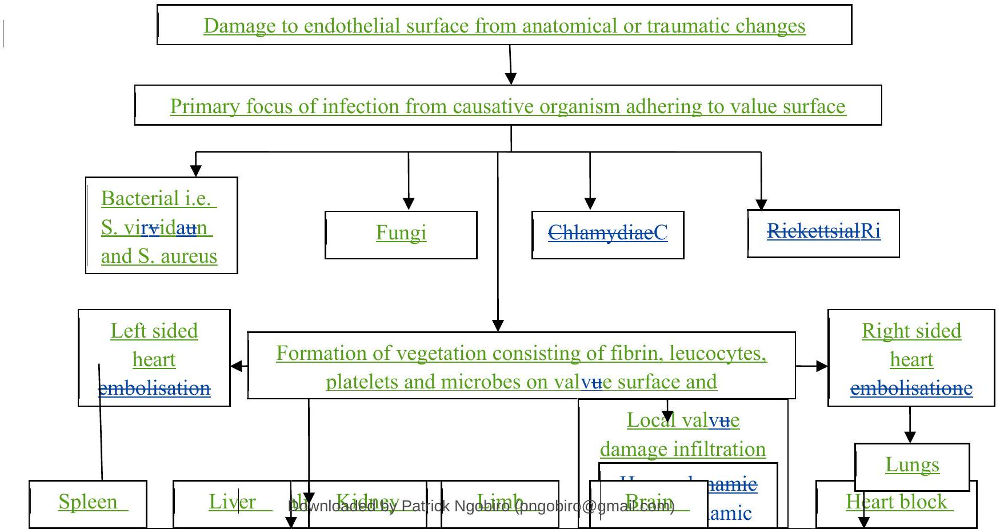

Infective Endocarditis (Bacterial)
Infective Endocarditis (Bacterial)
This is an infection of the endocardial surface with micro organisms present in the lesions. The endocardium and the inner layer of the heart is continuous with the heart valves therefore, inflammation from infective endocarditis frequently affects the heart valves.
Occurrence: The frequency is now seen in older adults, clients after prosthetic valve placement and intravenous drug abusers.
Prognosis: The prognosis has changed with introduction of antibiotics because before then, infective endorcarditis was almost always fatal. The mortality rate is now 20 to $40 \%$.
Predisposing Conditions
- Cardiac conditions;
- Prosthetic heart valves (artificial)
- Congenital heart disease
- Mitral valve prolapsed
- Heart murmurs
- Idiopathic hypertrophic sub-aortic stenosis
- Rheumatic heart disease
- Degenerative heart disease
- Valvular lesions
- Cardiac surgery
- Immune Suppressive Conditions i.e.
- Cancer
- Severe burns
- Immune suppressive therapy i.e. radiotherapy.
- Invasive procedures i.e.
- Peripheral arterial veneous fistula i.e. that used in chronic haemodialysis.
- In dwelling intravenous or intra-arterial catheters.
- Intravenous drug abuse.
- Invasive diagnostic procedures.
- Alcoholism
Classification of Infective Endocarditis
- Sub-acute
- Acute
- Sub-Acute: This form has a longer clinical of more insidious onset with less toxicity and the causative organism is usually of low virulence. Most often streptococcus viridian.
- Acute Form: Has a shorter clinical course with a more rapid onset increased toxicity and a more pathogenic/virulent causative micro organism that is staphylococcus aureus.
Causes
Initially it was being caused by bacteria but of late micro organisms such as fungi, Chlamydia and rickettsia have been identified.
NOTE: These micro organisms get entry into the heart because of surgical interventions, intravenous injections and invasive diagnostic procedures.
Pathophysiology
The vegetation form that is the primary lesions of infective endocarditis consist of fibrin, leucocytes, platelets and microbes that adhere to the valve surface or endocardium. The loss of these fragile vegetations into the circulation results in embolization. In left sided heart vegetations systemic embolization occurs progressing to the organs particularly the kidney, spleen and brain and there may be limp infarction. Right sided heart lesions embolize to the lungs. The infarction may be spread locally to cause damage to the valvers or to their supporting structures. The resulting valvular incompetence and eventual invasion of the myocardium in the ongoing disease results in C.C.F, generalized myocardial dysfunction and continued sepsis.
Sequence of Events in Infective Endocarditis
Sources of Infections
| Organism | Situation/Origin |
|---|---|
| (i) Streptococcus viridians | Dental procedures |
| (ii) Streptococcus bovis | GIT malignant disorders |
| (iii) Enterococcus species | GIT and genital urinary procedures |
| (iv)Staphylococcus aureus | I.V. drug use, cardiac surgery, nosocomial infections (URTI), parenteral therapy, prosthetic values. |
| (v) Pseudomonas aeruginosa | I.V. drug use and surgery |
| (vi)Candida, aspergilla organisms | Immune compromised persons |
Clinical Manifestations
These arent quite specific as there can be involvement of multiple organ systems.
- Fever in more than $90\%$ of patients.
- Chills
- Weakness
- Malaise
- Fatigue
- Anorexia
- Arthralgia
- Myalgia
- Backache
- Abdominal discomfort
- Weight loss
- Headache
- Clubbing of fingers
The onset of a new murmur is also frequently noted. C.C.F occurs up to $80 \%$ of patients with aortic value endocarditis and in approximation $50 \%$ of patients with mitral value endocarditis. Apart from the above general manifestations there is;
Vascular Manifestations
- Splinter hemorrhages that may occur in the nail beds.
- Osler nodes painful, tender, red or purple pea size lesions. They may be found on finger tips or toes.
- Janeway lesions Flat, painless, small red spots found on the palms or soles.
- On funduscopic examination, there may be retinal hemorrhagic lesions called Roths spots.
Clinical Manifestations Secondary to Embolization
- Embolization to the spleen may result into left upper quadrant pain and splenomegaly. There will be local tenderness and abdominal rigidity.
- Embolization to the kidneys may cause pain to the flunk, haematuria, glomerulonephritis.
- Emboli may lodge in small peripheral blood vessels and cause gangrene.
- Embolization to the brain may cause neurological problems i.e. hemiplegia, ataxia, aphasia and change in level of consciousness.
- Pulmonary emboli may occur in right sided lesions.
Diagnostic Procedures
- History taking: Obtaining the patients recent health history is important in assessing infective endocarditis. Queries should be made regarding on recent dental, urological, surgical or gynecological procedures, including normal or abnormal obstetrical deliveries. Previous history of heart disease, recent cardiac catheterization, I.V. infusions and catheters as well as skin, respiratory or urinary tract infections should be documented.
- Laboratory investigations: Blood for culture and sensitivity, WBC, ESR which will be raised, urine for hematuria (microscopic).
- Chest x -ray performed to check presence of C.C.F.
- Echocardiogram performed to detect the presence of valvular vegetations or abnormal value leaflet movement resulting from growth of vegetations.
- Cardiac catheterizations: To detect the degree of valvular insufficiency and to determine the involvement of more than one value.
Management
A. Medical Management
a) Prophylactic Treatment
Clients with various anatomical abnormalities of the heart or great vessels are at great risk of contracting endocarditis. Prophylactic treatment is recommended for patients with some common cardiac heart conditions before they undergo certain surgical conditions. Specific antibiotic regiments are recommended for dental, respiratory tract, gastro intestinal, genitor urinary procedures.
b) Therapeutic Management
Accurate identification of the infecting organism is the key to successful management. The reaction of infective endocarditis usually requires 4 to 6 weeks of parentral single or combination of antibiotic therapy.
Drugs given depending on the situation
| Empirical Situation | Antibiotic Regiment |
|---|---|
| Acute | Penicillin, Ampicillin and Gentamycin |
| Sub-acute | Ampicillin and Gentamycin |
Other drugs that can be used are penicillin G , streptomycin with fungal infection can be given Amphotericin B. During the reaction periodic monitoring of the patients, antibiotic serum levels must be performed and subsequent blood cultures may be done to evaluate the effectiveness of the treatment.
B. Nursing Management
a) Prevention/Health Maintenance and Promotion
Assessment of the clients history and understanding of the disease process are crucial for planning and implementing appropriate health maintenance strategies. It is important that these at risk of developing endocarditis are identified and educated to avoid nosocomial infections, fatigue to maintain good oral hygiene, to visit the dentist at regular intervals and to take prophylactic antibiotic therapy before any invasive procedure.
b) Acute Intervention
Patient with infective hospitalization for 2 to 4 weeks. Physical assessment and history taking are done. In particular, there should be frequent monitoring of body temperature as fever is one of the common early signs. Measures to reduce fever are employed. Bed rest is necessary when there is fever or complications such as heart done are present. Otherwise, the patient may be ambulant and perform moderate activities. Heart sounds should be assessed with vital signs to detect a change in the character of the cardiac murmur and presence of extra diastolic sounds. Arthralgia is a common problem and may involve multiple joints and be accompanied by myalgia. The patient should be assessed for joint tenderness, range of motions and muscle tenderness. The oral mucosa, upper chest and lower extremities should be examined for petechial (bleeding spots of blood under skin). A general assessment of systems should be completed to facilitate recognition of hemodynamic and embolic complications.
Laboratory data should be monitored to determine the effectiveness of long term high dose antibiotic therapy received by the client. The I.V. line should be monitored for patency and antibiotics given as scheduled monitor the side effects of these antibiotic or drugs given.
To prevent consequences from immobility, the patient should wear anti-embolism stockings, perform range of motion exercises and turn, cough and deep breathe every 2 hours. The patient may experience anxieties and fear associated with the illness, provide support during this period and employ measures to reduce fears and anxieties.
c) Chronic Management
This focuses on the education of the patient regarding the nature of the disease and on the reduction on the risk of re-infection. The patient is taught about symptoms that may indicate recurrent infections such as fever, fatigue, malaise, chills and the importance of seeking medical assistance if any of these symptoms occur. The patient needs to be instructed about the need for prophylactic antibiotic therapy before any invasive procedure is performed to prevent reoccurrence. The nurse must explain to the client the relationship of follow-up care, good nutrition and early reaction of common infections to maintain good health.